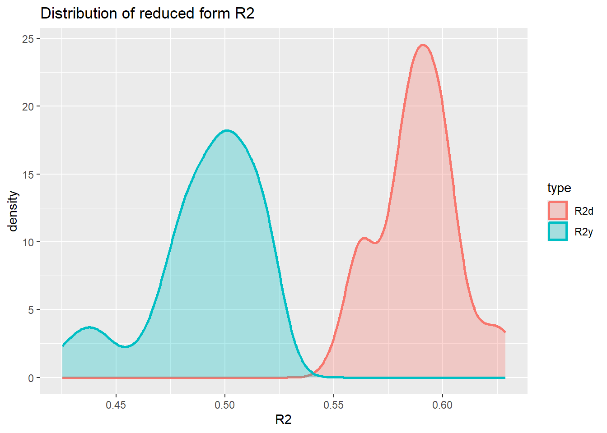
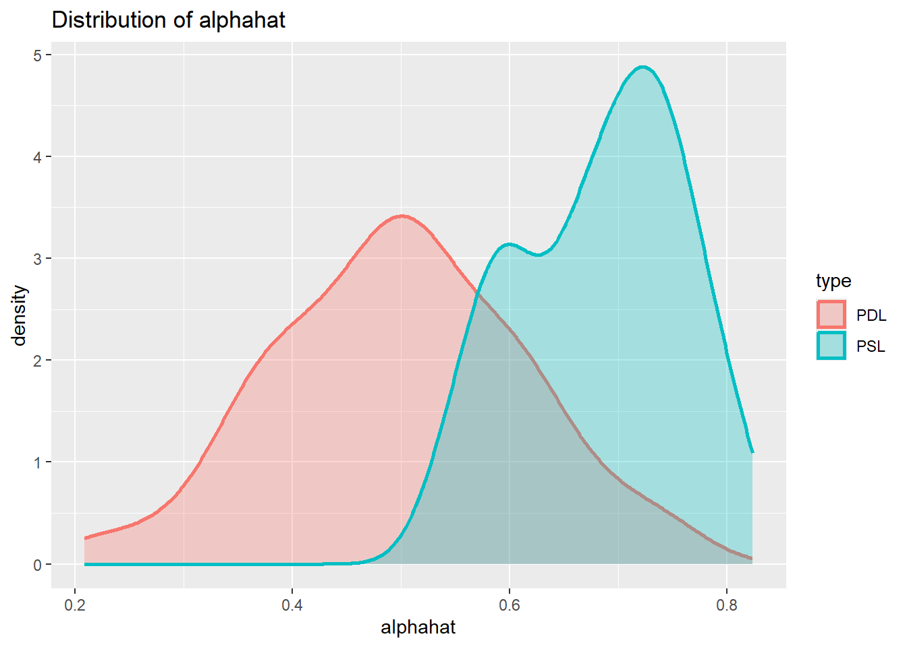

library(tidyverse)
library(MASS)
library(ggplot2)
library(glmnet)
library(hdm)
library(AER)Bias Simulation
Introduction
In this walkthrough we will run through a simulation that has been used in Fitzgerald Sice et al. (2023) which will help us understand when causal inference regressions (like Lasso and Double Robust Lasso) work and when they do not.
Reading:
Fitzgerald Sice, Jack and Lattimore, Finnian and Robinson, Tim and Zhu, Anna, Practical Insights Into Applying Double LASSO (May 18, 2023). Available at SSRN: https://ssrn.com/abstract=4452778 or http://dx.doi.org/10.2139/ssrn.4452778
The Background
Consider a model of the following form
\[\begin{equation} y_i = \delta D_i + \mathbf{x}_i\mathbf{\beta}_1 + \beta_2~u_i+ \epsilon_i \end{equation}\]
where the variables represent
- an outcome variable of interest, \(y_i\), for individual \(i\)
- a treatment variable, \(D_i\), which represents whether individual received some treatment (\(D_i=1\)) or not (\(D_i=1\))
- a vector of observable covariates associated to individual \(i\), \(\mathbf{x}_i\), where this includes a constant.
- a vector of unobservable covariates associated to individual \(i\), \(\mathbf{u}_i\).
In addition to this we consider a third category of variables, instruments \(\mathbf{z_i}\), these are variables that are observable, are excluded from the above model for \(y_i\), but have explanatory power for the treatment variable as per
\[\begin{equation} d_i = \mathbf{x}_i\mathbf{\beta}_3 + \beta_4~u_i + \gamma~z_i + \nu_i \end{equation}\]
Below we will simulate data from such a setup and establish how different regression approaches perform, always aiming to obtain a good estimate of the parameter capturing the treatment effect of \(D\) on \(y\), here the parameter \(\delta\).
The estimation methods we will apply are the
- The Post LASSO (forcing \(D_i\) to be included in the LASSO process)
- The Post Double Selection LASSO
Inthis workthrough we will notgo in detail through the different methods. If you are interested you can work through the workthroughs on Ridge and LASSO and Post Double Selection LASSO on the ECLR webpage.
Simulation Setup
No unobservables - No instruments
We begin with the situation in which there are no relevant unobservable variables, meaning we set \(\beta_2=\gamma=0\) which simplifies the data generating process significantly.
\[\begin{eqnarray} y_i &=& \delta D_i + \mathbf{x}_i\mathbf{\beta}_1 + \epsilon_i\\ d_i &=& \mathbf{x}_i\mathbf{\beta}_3 + \nu_i \end{eqnarray}\]
We write a function for the DGP whcih we will then later reuse inside a loop for the simulation.
We begin by simulating the error terms coming from standard normal distributions.
dgp <- function(n){
# Simulates Fitzgerald Sice et al
# DGP from Section 3.1
# d = x * beta_3 + nu
# y = delta D + x * beta_1 + epsilon
eps <- rnorm(n)
nu <- rnorm(n)
# Simulates j = 200 variables of X ~ N(0, Sigma)
J = 200
mu = rep(0, J)# mean is 0 for all j
rho <- 0.5 # Define the decay factor FOR CORR MATRIX
first_row <- rho^(0:(J - 1))
Sigma <- toeplitz(first_row) # Generate the covariance matrix using toeplitz
x <- mvrnorm(n, mu, Sigma)
# parameters
c1 <- 0.3
c3 <- 0.8
delta <- 0.5
beta0 <- 1/(seq(1,J,1)^2)
beta0 <- as.matrix(beta0, J, 1)
beta1 <- c1 * beta0
beta3 <- c3 * beta0
# generate d and y
d <- x %*% beta3 + nu
y <- delta*d + x %*% beta1 + eps
return(list(y,d,x))
}
data <- dgp(1000)
ysim <- unlist(data[[1]])
dsim <- unlist(data[[2]])
xsim <- unlist(data[[3]])
Regy <- summary(lm(ysim~., data.frame(ysim,xsim)))
Regd <- summary(lm(dsim~., data.frame(dsim,xsim)))
paste("R^2 in y equation =", Regy$r.squared)[1] "R^2 in y equation = 0.495566889089995"paste("R^2 in d equation =", Regd$r.squared)[1] "R^2 in d equation = 0.595068098779043"Let’s see what values of \(R^2_y\) and \(R^2_d\) we get for these settings of c1 and c3. \(R^2_y\) and \(R^2_d\) are the \(R^2\) from the reduced form regressions of \(y\) (or \(d\)) on the variables in \(x\). In the paper they use a sample size of \(n = 100\) and \(J=200\) variables. This means that we cannot calculate \(R^2\) from such a regression. For the simulation below we therefore use \(n=1000\).
nsim = 50 # don't need many sims ot get an idea
save_R2 <- matrix(NA,nrow = nsim, ncol = 2)
for (i in 1:nsim){
data <- dgp(1000)
ysim <- unlist(data[[1]])
dsim <- unlist(data[[2]])
xsim <- unlist(data[[3]])
Regy <- summary(lm(ysim~., data.frame(ysim,xsim)))
Regd <- summary(lm(dsim~., data.frame(dsim,xsim)))
save_R2[i,1] <- Regy$r.squared
save_R2[i,2] <- Regd$r.squared
#print(paste("R^2 in y equation =", Regy$r.squared, ",R^2 in d equation =", Regd$r.squared))
}Now we can plot the distribution for the two reduced form \(R^2\)s.
save_R2 <- as.data.frame(save_R2) %>% rename(R2y = V1, R2d = V2)
#create long dataframe, better for plotting
save_R2 <- save_R2 %>% pivot_longer(everything(),names_to = "type", values_to = "R2")
plot_den_R2 <- ggplot(save_R2, aes(x = R2, colour = type, fill = type)) +
geom_density(alpha = .3, size = 1) +
labs(title = "Distribution of reduced form R2")Warning: Using `size` aesthetic for lines was deprecated in ggplot2 3.4.0.
ℹ Please use `linewidth` instead.plot_den_R2
Varying the c1 and c3 parameters in the simulation will change these distributions. However, it appears impossible to achieve \(R^2_d = 0.8\) and \(R^2_y = 0.2\).
Estimation Strategies
We shall now proceed with implementing the different estimation strategies in this context. We simulate the above process 500 times, each simulation simulating \(n=100\) observations. As we are using \(J=200\) covariates (\(x\)) we cannot run a regression straight but we do have to apply reduction techniques.
- The Post LASSO (forcing \(D_i\) to be included in the LASSO process)
- The Post Lasso adding \(D_i\) after unconstrained variable selection through LASSO
- The Post Double Selection LASSO
Let’s firts simulate one process and apply the methods.
set.seed(1)
data <- dgp(100)
y.sim <- unlist(data[[1]])
colnames(y.sim) <- "Y"
d.sim <- unlist(data[[2]])
colnames(d.sim) <- "D"
x.sim <- unlist(data[[3]])
colnames(x.sim) <- paste0("X", 1:200)
dx.sim <- cbind(d.sim,x.sim)
colnames(dx.sim) <- c("D",paste0("X", 1:200))Let’s start with the simple post LASSO regression where D is part of the variables for selection.
cv_lasso=cv.glmnet(dx.sim,y.sim,family="gaussian",nfolds=10,alpha=1)
lasso.coef.lambda.1se <- as.matrix(coef(cv_lasso, s = "lambda.1se"))
# Now need to pick the selected variables
sel_vars <- rownames(lasso.coef.lambda.1se)[lasso.coef.lambda.1se > 0.0]
print(sel_vars)[1] "(Intercept)" "D" "X1" # Now run post LASSO regression
sel_vars <- sel_vars[sel_vars != "(Intercept)"] # removes the intercept
pL.data <- data.frame(y = y.sim, dx.sim[, colnames(dx.sim) %in% sel_vars])
pL.reg <- lm(Y~., data = pL.data)
summary(pL.reg)
Call:
lm(formula = Y ~ ., data = pL.data)
Residuals:
Min 1Q Median 3Q Max
-2.3692 -0.6011 -0.0492 0.5867 2.4501
Coefficients:
Estimate Std. Error t value Pr(>|t|)
(Intercept) 0.11582 0.09113 1.271 0.20677
D 0.52495 0.09128 5.751 1.03e-07 ***
X1 0.29978 0.10863 2.760 0.00692 **
---
Signif. codes: 0 '***' 0.001 '**' 0.01 '*' 0.05 '.' 0.1 ' ' 1
Residual standard error: 0.9109 on 97 degrees of freedom
Multiple R-squared: 0.5553, Adjusted R-squared: 0.5461
F-statistic: 60.56 on 2 and 97 DF, p-value: < 2.2e-16You can see here that the coefficient to D is very small (compared to the true \(\alpha =0.5\)).
In the way we implemented this above it is actually possible that the D variable gets selected out. We certainly do not want that as we know that we want to make inference on that variable.
penalty_factors <- rep(1, ncol(dx.sim)) # default: penalise all
penalty_factors[colnames(dx.sim) == "D"] <- 0 # do not penalise "D"
cv_lasso=cv.glmnet(dx.sim,y.sim,family="gaussian",
nfolds=10,
alpha=1,
penalty.factor = penalty_factors)
lasso.coef.lambda.1se <- as.matrix(coef(cv_lasso, s = "lambda.1se"))
# Now need to pick the selected variables
sel_vars <- rownames(lasso.coef.lambda.1se)[lasso.coef.lambda.1se != 0.0]
print(sel_vars)[1] "(Intercept)" "D" # Now run post LASSO regression
sel_vars <- sel_vars[sel_vars != "(Intercept)"] # removes the intercept
pL.data <- data.frame(y = y.sim, dx.sim[, (colnames(dx.sim) %in% sel_vars), drop = FALSE])
pL.reg <- lm(Y~., data = pL.data)
summary(pL.reg)
Call:
lm(formula = Y ~ ., data = pL.data)
Residuals:
Min 1Q Median 3Q Max
-2.19434 -0.58528 -0.00686 0.52578 2.17197
Coefficients:
Estimate Std. Error t value Pr(>|t|)
(Intercept) 0.12280 0.09412 1.305 0.195
D 0.69987 0.06787 10.312 <2e-16 ***
---
Signif. codes: 0 '***' 0.001 '**' 0.01 '*' 0.05 '.' 0.1 ' ' 1
Residual standard error: 0.9412 on 98 degrees of freedom
Multiple R-squared: 0.5204, Adjusted R-squared: 0.5155
F-statistic: 106.3 on 1 and 98 DF, p-value: < 2.2e-16We call this estimator the post-single-LASSO (PSL). Now you can see that the coefficient on D is larger than 0.5. You can also notice that none of the variables in x.sim were selected by the LASSO. We can also test the hypothesis \(H_0: \alpha = 0.5\) which we know is correct as we simulated the data and set \(\alpha = 0.5\).
lht(pL.reg, "D = 0.5")
Linear hypothesis test:
D = 0.5
Model 1: restricted model
Model 2: Y ~ D
Res.Df RSS Df Sum of Sq F Pr(>F)
1 99 94.491
2 98 86.809 1 7.6822 8.6725 0.004035 **
---
Signif. codes: 0 '***' 0.001 '**' 0.01 '*' 0.05 '.' 0.1 ' ' 1you can see that the \(H_0\) is rejected at the 1% level.
Now we employ the post double-LASSO (PDL). This is done with the rlassoEffect() function from the hdm package.
doubleL = rlassoEffect(x = x.sim, y = y.sim, d = d.sim, method = "double selection")
summary(doubleL)[1] "Estimates and significance testing of the effect of target variables"
Estimate. Std. Error t value Pr(>|t|)
D 0.5042 0.0753 6.695 2.15e-11 ***
---
Signif. codes: 0 '***' 0.001 '**' 0.01 '*' 0.05 '.' 0.1 ' ' 1The estimate to D here is actually close to the correct value of \(\alpha = 0.5\).
Simulation
The question now is whether that is just chance or systematically so. To investigate this we run a simulation where we simulate the process 500 rimes. Every time we shall estimate the coefficient \(\alpha\).
nsim = 100
save_alphahat <- matrix(NA,nrow = nsim, ncol = 2)
for (i in 1:nsim){
data <- dgp(100)
y.sim <- unlist(data[[1]])
colnames(y.sim) <- "Y"
d.sim <- unlist(data[[2]])
colnames(d.sim) <- "D"
x.sim <- unlist(data[[3]])
colnames(x.sim) <- paste0("X", 1:200)
dx.sim <- cbind(d.sim,x.sim)
colnames(dx.sim) <- c("D",paste0("X", 1:200))
# PSL estimator
penalty_factors <- rep(1, ncol(dx.sim)) # default: penalise all
penalty_factors[colnames(dx.sim) == "D"] <- 0 # do not penalise "D"
cv_lasso=cv.glmnet(dx.sim,y.sim,family="gaussian",
nfolds=10,
alpha=1,
penalty.factor = penalty_factors)
lasso.coef.lambda.1se <- as.matrix(coef(cv_lasso, s = "lambda.1se"))
# Now need to pick the selected variables
sel_vars <- rownames(lasso.coef.lambda.1se)[lasso.coef.lambda.1se != 0.0]
# Now run post LASSO regression
sel_vars <- sel_vars[sel_vars != "(Intercept)"] # removes the intercept
pL.data <- data.frame(y = y.sim, dx.sim[, (colnames(dx.sim) %in% sel_vars), drop = FALSE])
pL.reg <- lm(Y~., data = pL.data)
save_alphahat[i,1] <- pL.reg$coefficients["D"]
# PDL estimator
doubleL = rlassoEffect(x = x.sim, y = y.sim, d = d.sim, method = "double selection")
save_alphahat[i,2] <- doubleL$coefficient["D"]
}Now we can plot the distribution for the two different estimates.
save_alphahat <- as.data.frame(save_alphahat) %>% rename(PSL = V1, PDL = V2)
#create long dataframe, better for plotting
save_alphahat <- save_alphahat %>% pivot_longer(everything(),names_to = "type", values_to = "alphahat")
plot_den_alphahat <- ggplot(save_alphahat, aes(x = alphahat, colour = type, fill = type)) +
geom_density(alpha = .3, size = 1) +
labs(title = "Distribution of alphahat")
plot_den_alphahat
You can see from here that we get a bias in the PSL estimators